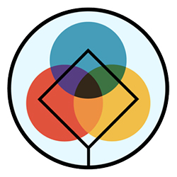

Connecting Open Science Projects#

Why?#
The open source community is very big, with countless projects, and it is a challenge to stay informed. Many projects remain unknown unless they are showcased at events or through grant proposals. This lack of visibility makes it difficult for community members to discover, connect, and collaborate effectively.
Solution#
We propose a centralized platform with a searchable dataset and news feed to improve the discoverability of the projects. They can share key information such as goals, contributor needs, and progress updates, allowing developers and users to easily find and connect with them. This centralized hub aim to foster collaboration and improve visibility across the community.
This platform will allow users to search for projects based on their interests, skills, and availability. It will also provide a space for project owners to showcase their work, share updates, and find collaborators.
Outcomes#
We created a form and an initial version of the platform using Google Forms, and quarto. The form collects essential information about projects, including the name, logo, categories, type, description, website, location, scope, fiscal sponsor, and social media links. The collected responses are then stored in a Google Sheet, which can be used to create a searchable dataset of the projects.
The repository for the project can be found here.
Form#
The questions on the Google Form were designed around key information that anyone might need to know about the projects. The form is divided into sections, each about project details. This structure allows project owners to provide a comprehensive overview of their project, making it easier for users to find and connect with other initiatives.
What we need to know about projects?#
This form collects key information about your project for publication on a website resulting from the DISC Unconference 2025. The data provided will allow others to explore and learn about different projects. We appreciate your contribution to making this initiative a reality.
What is the name of your project?
Share a link of your project logo
What are the categories of your project? Open Science/Open Source/Open Data/Other
Which is your kind or type of project? Organization/Affiliate project/Community/Other
Share a short description about your project
Does your project have a website? Yes/No (Share a link to your project website)
When did your project start?
Where is your project located?
What is the scope of your project? Africa/Asia/Europe/Latin America/North America/Oceania/Antarctica/Global/Local/Regional/Other
Does your project have a fiscal sponsor? Yes/No (Please specify the name of the fiscal sponsor for your project)
Share your social media link (your main social media)
Share links to other social media or users of your project
Does your project use a version control platform (GitHub, GitLab, …)? Yes/No
About your version control platform (Select your case) Single repository/Organization/Multiple Organizations/Other
Do you know other project(s) that would be good to have on the website? Would you like to mention them? Yes/No
Tell us about the other project(s) you know and would like to see on the website (name, link, any other information you would like to share)
Next Steps#
Write contributors guidelines.
Send form to open source projects to start populating the dataset.
Deploy the platform on GitHub Pages.
Automate the workflow to update the platform with new project data.
Improve the search functionality to help users find relevant projects.
Develop a news feed feature to keep users informed about project updates.
Enable translation of the platform in other languages.
Improve platform design and functionality.